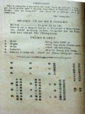
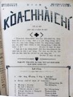
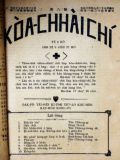
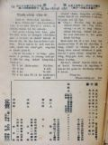
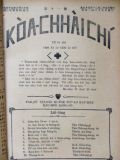
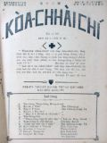
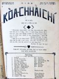

Languages
台文
｜
中文
｜
日本語
｜
English
字體
小
｜
中
｜
大
首頁
/
白話字數位典藏
白話字數位典藏全文檢索
查詢模式
選擇年代
清國時代(1885-1895)
日本時代(1895-1945)
戰後(1945-1969)
1885-1895
1896-1905
1906-1915
1916-1925
1926-1935
1936-1945
1946-1955
1956-1965
1966-1969
1970-1980
1980-1990
1990-2000
2000-2010
2010-
選擇文類
詩
散文
小說
戲劇
傳記
選擇作者
陳清忠
陳清義
編輯部
柯設偕
吳天命
明有德
偕叡廉
周天來
劉華義
王守勇
林茂生
陳添旺
王占魁
柯維思
賴仁聲
陳瓊琚
雪峰逸嵐
吳清鎰
郭水龍
蕭樂善
許水露
葉金木
陳金然
章王由
廖得
鄭連坤
潘道榮
楊士養
梁秀德
劉約翰
周淑慧
高金聲
林燕臣
黃六點
蔡愛義
許有才
主筆
巴克禮
陳鳩水
郭朝成
張基全
陳明清
陳能通
拾穗生
顏振聲
卓恆利
傳道局
胡文池
劉主安
鄭兒玉
Google Search
Yahoo Search
全部
刊名
標題
標題(教羅)
全文
全文(教羅)
作者
第2頁，共3頁(共50筆資料) 0.55753898620605sec
1
2
3
To Page
GO
文字列表
圖文列表
排序
日期
文類
刊名
作者
影像
[1925-7 芥菜子 文類-選擇文類 作者-編輯部/Phian-chip-pō͘͘]
(1)
投稿Ê注意 [ TÂU-KÓ Ê CHÙ-Ì ]
投稿Ê注意 1. 字數 上濟1500字2. 字眼請用khah淺白。3. 字句請寫分明。4. 原稿 袂得thang寄還。5. 原稿ê取捨 請予編輯部主意。 ...
[1925-7 芥菜子 文類-選擇文類 作者-編輯部/Phian-chip-pō͘͘]
(1)
緊來！！！ [ KÍN LÂI !!! ]
緊來！！！ 北部所希望ùi發行ê教會報已經得著thang相kap歡喜感謝天父。 Ài加添： 1. 進步捌聖經。2. 進步捌道理。3. 熱心。4. 信德。5. 人生ê趣味。6. 歡喜，..............................ê，請恁緊來注文「芥菜子」去看。的確會幫贊咱信仰ê生活。 本報一年欲發行4本（7, 10, 1, 4月）一本ê紙數50面。一本 ￥ 0.15（角半）一年份 ￥ 0.5（五角）ÀI注文ê人請恁寄前金 編輯部 啟------------...
[1925-10 芥菜子 文類-選擇文類 作者-編輯部/Phian-chip-pō͘͘]
(1)
內容 [ LĀI-IÔNG ]
內容 活命ê源頭 劉約翰 祈禱無停 陳清忠譯 論祈禱ê要緊 陳清義 基督徒著怎麼奮鬥 劉約翰 論死人koh活 陳清忠譯 當殺爾慾 康清塗 袂得赦ê罪 陳清忠譯 用信清氣心肝 蕭樂善 &...
[1925-10 芥菜子 文類-選擇文類 作者-編輯部/Phian-chip-pō͘͘]
(1)
芥菜子獻金報告 [ KOÀ-CHHÀI-CHÍ HIÀN-KIM PÒ-KÒ ]
芥菜子獻金報告（將這个報告來代理領收） 大稻埕 ￥ 62.00 淡水 ￥ 57.30 艋舺 ￥ 33.00 Sek-kháu ￥ 22.00 新竹 ￥ 22.00 鳳林 ￥ 19.00 雙連 ￥ 18.50 宜蘭 ...
[1925-10 芥菜子 文類-選擇文類 作者-編輯部/Phian-chip-pō͘͘]
(1)
募集第3號Ê原稿 [ BŌ͘-CHI̍P TĒ SAN HŌ Ê GOÂN-KÓ ]
募集第3號Ê原稿 期間-----11 月25號止。列位若有人ài投稿佇第3號ê芥菜子，請毋thang過限，量早寄來淡水交主筆陳清忠。 ...

[1925-10 芥菜子 文類-選擇文類 作者-編輯部/Phian-chip-pō͘͘]
(1)
投稿Ê注意 [ TÂU-KÓ Ê CHÙ-Ì ]
投稿Ê注意 1.字數 上濟1500字。2.字眼 請用khah淺白。3.字句 請寫分明。4.原稿 袂得thang寄還。5.原稿ê取捨，請予編輯部主意。 ...
[1965-12 台灣教會公報 文類-戲劇 作者-編輯部/Phian-chip-pō͘͘]
西羅亞ê 池 [ SE-LÔ-A Ê TÎ ]
西羅亞ê 池編輯室1965.12.01 P.12-15、18 人物：青瞑人。過路人A， B， C， D， E。法利賽人1， 2， 3。青瞑人ê老父。青瞑人ê老母。其他群眾。時間耶穌在世中。所在：耶路撒冷城外，西羅亞 ê 池邊。隔一條鬧熱ê路ê hit 旁，有真清 ê西羅亞池。 Tī 池邊有發一jiah一jiah ê蘆葦。對 chia看過去有耶路撒冷ê聖殿，hit個白色照著太陽會反射。是靜靜春天ê早起時。 幕開青瞑人柺á tok-leh tok-leh, 對 正旁 登場。青： O͘h! 到 lah， 到 lah，有鼻著真靜 ê水 hiàn， (柺á tuh-leh行2, 3 步)細膩leh，...
[1959-11 台灣教會公報 文類-散文 作者-編輯部/Phian-chip-pō͘͘]
台灣的信仰 [ Tâi-oân ê sìn-gióng ]
台灣的信仰(編輯室)1959年11月851期 p.15-16 ◘ 詩冊，聖冊予人藏蹛厝頂楹仔縫。員林欲過草屯方面的著經過東山鄉，到山頂有一所在叫做樟空。樟空北爿山頂庄社裡有一戶作穡人的婦人人是信主的，名A-ki嫂。以前只有伊佮囡仔有相chhoā teh拜上帝，其餘丈夫也是未信者；若按呢，這个婦人人怎樣來信主，就是因為捌去彰化醫館taⁿ-tia̍p身命佇遐得著救的。總是可惜轉來了通莊無人信主，自然ta-ke-koaⁿ佮丈夫攏大反對，甚至窘逐，拍，罵，踢攏捌承受，所以佇醫館學了lím-lím會曉讀的聖詩就予丈夫提起來藏，ta-ke-koaⁿ佮丈夫攏反對，迫害，阻止毋予伊去禮拜，放刁欲攑槌仔，閘蹛...

[1927-5 芥菜子 文類-選擇文類 作者-編輯部/Phian-chip-pō͘͘]
(1)
封面 [ Hong-bīn ]
芥菜子 第 16號 1927年 5月29號 「天國親像一粒芥菜子，人提去掖佇伊的園；這个是百項種子的第一細；到伊大叢，是較大攏總的菜蔬，紲成做樹，致到空中的鳥來歇伊的枝」 馬太13章31節 「咱若有信親像一粒芥菜子，恁就欲共這个山講，對遮徙去遐，ia̍h欲徙去；閣恁teh欲無一項袂。」 馬太17章20節 北部台灣基督長老教會 教會公報 內容 1、「予人和平的人有福氣」 陳清義 2、基督怎樣較贏念佛？ 陳清忠譯 3、犧牲的人生 陳瓊琚 4、教囝的法度 ...
[1926-10 芥菜子 文類-選擇文類 作者-編輯部/Phian-chip-pō͘͘]
(1)
封面 [ Hong-bīn ]
芥菜子 第 9號 1926 年 10月27號 「天國親像一粒芥菜子，人提去掖佇伊的園；這个是百項種子的第一細；到伊大叢，是較大攏總的菜蔬，紲成做樹，致到空中的鳥來歇伊的枝。」 馬太13章31節 「咱若有信親像一粒芥菜子，恁就欲共這个山講，對遮徙去遐，ia̍h欲徙去；閣恁teh欲無一項袂。」 馬太17章20節 北部台灣基督長老教會 教會公報 內容 1、 研究耶穌的祈禱會捌耶穌是上帝 陳清義 2、 著怎樣？ 蕭樂善 3、 聖冊 蔡安定 4、 耶穌佮撒該 柯撒該 5、 ...
[1963-8 台灣教會公報 文類-傳記 作者-編輯部/Phian-chip-pō͘͘]
數念好人好事 [ SIÀU-LIĀM HÓ LÂNG HÓ SŪ ]
Normal 0 0 2 false false false MicrosoftInternetExplorer4 /* Style Definitions */ table.MsoⁿormalTable {mso-style-name:表格內文; mso-tstyle-rowband-size:0; mso-tstyle-colband-size:0; mso-style-noshow:yes; mso-s...

[1926-9 芥菜子 文類-選擇文類 作者-編輯部/Phian-chip-pō͘͘]
(1)
封面 [ Hong-bīn ]
芥菜子 第 8號 1926 年 9月27號 「天國親像一粒芥菜子，人提去掖佇伊的園；這个是百項種子的第一細；到伊大叢，是較大攏總的菜蔬，紲成做樹，致到空中的鳥來歇伊的枝」 馬太13章31節 「咱若有信親像一粒芥菜子，恁就欲共這个山講，對遮徙去遐，ia̍h欲徙去；閣恁teh欲無一項袂。」 馬太17章20節 北部台灣基督長老教會 教會公報 內容 1、 莫得驚 陳清義 2、 活水 明有德 3、 受窘逐的人 陳清忠譯 4、 基督教佮孔子教的研究 陳清義 5、 好歹境遇攏有利益 雪峰逸嵐 6、 本...
[1926-10 芥菜子 文類-選擇文類 作者-編輯部/Phian-chip-pō͘͘]
(1)
讀者諸位 [ Tha̍k-chiá chu-uī ]
讀者諸位。 列位讀者台覽，- 「芥菜子」對發刊以來有得著列位的愛顧，愛深深共恁說謝。 今年尾已經欲到，本部會因為愛整理注文簿的因端，愛請列位佇今年內，來納今年份的報料。若是明年愛欲閣繼續，才對正月算起是較便利。 (因為計算的都合，本年度的報料，愛將每部 ¥.035來算，請諒解)。 就是：- 第 1號(見本) 無料。 第 2號 ¥.125 第 3號 ¥.125 第 4號到第 11號(每部) ¥.035 請照頂面所定，照列位所注文號數，計算寄來納。 注意：報料用郵便切手代用也好，總是若愛用切手代用請寄五lin 抑是一sián ...
[1926-11 芥菜子 文類-選擇文類 作者-編輯部/Phian-chip-pō͘͘]
(1)
封面 [ Hong-bīn ]
芥菜子 第 10號 1926 年 11月27號 「天國親像一粒芥菜子，人提去掖佇伊的園；這个是百項種子的第一細；到伊大叢，是較大攏總的菜蔬，紲成做樹，致到空中的鳥來歇伊的枝。」 馬太13章31節 「咱若有信親像一粒芥菜子，恁就欲共這个山講，對遮徙去遐，ia̍h欲徙去；閣恁teh欲無一項袂。」 馬太17章20節 北部台灣基督長老教會 教會公報 內容 1、通知書 2、臨時中會 3、研究耶穌的神跡會捌耶穌是上帝 陳清義 4、聽候主閣來 ...

[1926-11 芥菜子 文類-選擇文類 作者-編輯部/Phian-chip-pō͘͘]
(1)
讀者諸位 [ Tho̍k-chiá chu-uī ]
讀者諸位。 列位讀者台覽，- 「芥菜子」對發刊以來有得著列位的愛顧，愛深深共恁說謝。 今年尾已經欲到，本部會因為愛整理注文簿的因端，愛請列位佇今年內，來納今年份的報料。若是明年愛欲閣繼續，才對正月算起是較便利。 (因為計算的都合，本年度的報料，愛將每部 ¥.035來算，請諒解)。 就是：- 第 1號(見本) 無料。 第 2號 ¥.125 第 3號 ¥.125 第 4號到第 11號(每部) ¥.035 請照頂面所定，照列位所注文號數，計算寄來納。 注意：報料用郵便切手代用也好，總是若愛用切手代用請寄五lin 抑是一sián ...

[1926-12 芥菜子 文類-選擇文類 作者-編輯部/Phian-chip-pō͘͘]
(1)
封面 [ Hong-bīn ]
芥菜子 第11號 1926 年 12月25號 「天國親像一粒芥菜子，人提去掖佇伊的園；這个是百項種子的第一細；到伊大叢，是較大攏總的菜蔬，紲成做樹，致到空中的鳥來歇伊的枝。」 馬太13章31節 「咱若有信親像一粒芥菜子，恁就欲共這个山講，對遮徙去遐，ia̍h欲徙去；閣恁teh欲無一項袂。」 馬太17章20節 北部台灣基督長老教會 教會公報 內容 1、研究耶穌的教示，會捌耶穌是上帝。 陳清義 2、世界教化的使命。 陳清忠譯 3、信仰佮行為。 蔡安定 4、閣活的力。 陳清忠譯 5、基隆一日久的感想。 雪峰逸嵐 6、「一滴一滴的水...
[1927-1 芥菜子 文類-選擇文類 作者-編輯部/Phian-chip-pō͘͘]
(1)
封面 [ Hong-bīn ]
芥菜子第 12號1927 年 1月25號 「天國親像一粒芥菜子，人提去掖佇伊的園；這个是百項種子的第一細；到伊大叢，是較大攏總的菜蔬，紲成做樹，致到空中的鳥來歇伊的枝。」 馬太13章31節 「咱若有信親像一粒芥菜子，恁就欲共這个山講，對遮徙去遐，ia̍h欲徙去；閣恁teh欲無一項袂。」 馬太17章20節 北部台灣基督長老教會 教會公報 內容 1、基督的神tek 陳清義 2、兩个恭喜 雪峰逸嵐 3、死！ 陳清忠譯 4、十字架的路 " 5...
[1927-1 芥菜子 文類-選擇文類 作者-編輯部/Phian-chip-pō͘͘]
(1)
通知 [ Thong-ti ]
通知 今年北部中會開會期日是新曆 2月15號，下午 2點起。場所佇艋舺禮拜堂。...

[1927-2 芥菜子 文類-選擇文類 作者-編輯部/Phian-chip-pō͘͘]
(1)
封面 [ Hong-bīn ]
芥菜子 第 13號 1927 年 2月27號 「天國親像一粒芥菜子，人提去掖佇伊的園；這个是百項種子的第一細；到伊大叢，是較大攏總的菜蔬，紲成做樹，致到空中的鳥來歇伊的枝。」 馬太13章31節 「咱若有信親像一粒芥菜子，恁就欲共這个山講，對遮徙去遐，ia̍h欲徙去；閣恁teh欲無一項袂。」 馬太17章20節 北部台灣基督長老教會 教會公報 內容 1、 大正天皇奉悼式 2、 基督的疼 雪峰逸嵐 3、 兩个異端 陳清忠 譯 4、 基督的孤單 ...

[1927-3 芥菜子 文類-選擇文類 作者-編輯部/Phian-chip-pō͘͘]
(1)
封面 [ Hong-bīn ]
芥菜子 第 14號 1927 年 3月28號 「天國親像一粒芥菜子，人提去掖佇伊的園；這个是百項種子的第一細；到伊大叢，是較大攏總的菜蔬，紲成做樹，致到空中的鳥來歇伊的枝」 馬太13章31節 「咱若有信親像一粒芥菜子，恁就欲共這个山講，對遮徙去遐，ia̍h欲徙去；閣恁teh欲無一項袂。」 馬太17章20節 北部台灣基督長老教會 教會公報 內容 1. 聖日 偕叡廉 2. 路得拾麥 陳清義 3. 內面的生活 陳清忠 譯 4. 論孝行 陳瓊居 ...
第2頁，共3頁(共50筆資料)
1
2
3
To Page
GO
數位典藏國家型科技計劃
拓展台灣數位典藏計畫
版權所有 國立台灣師範大學 台灣文化及語言文學研究所©2008
10610 台北市和平東路一段162號│TEL 02-7734-5516│Fax 02-2358-2461
計劃簡介
典藏特色
執行架構
計畫典藏數位化流程
成員介紹
台灣白話字發展簡介
巴克禮牧師與《台灣教會公報》
廈門話字典-杜嘉德
白話字教學-打馬字
中國南方白話字發展
台灣基督教長老教會簡表
台灣基督教長老教會教會歷史委員會
《北部台灣基督長老教會教會ê歷史》
關於陳清忠
白話字文學：台灣文學的早春